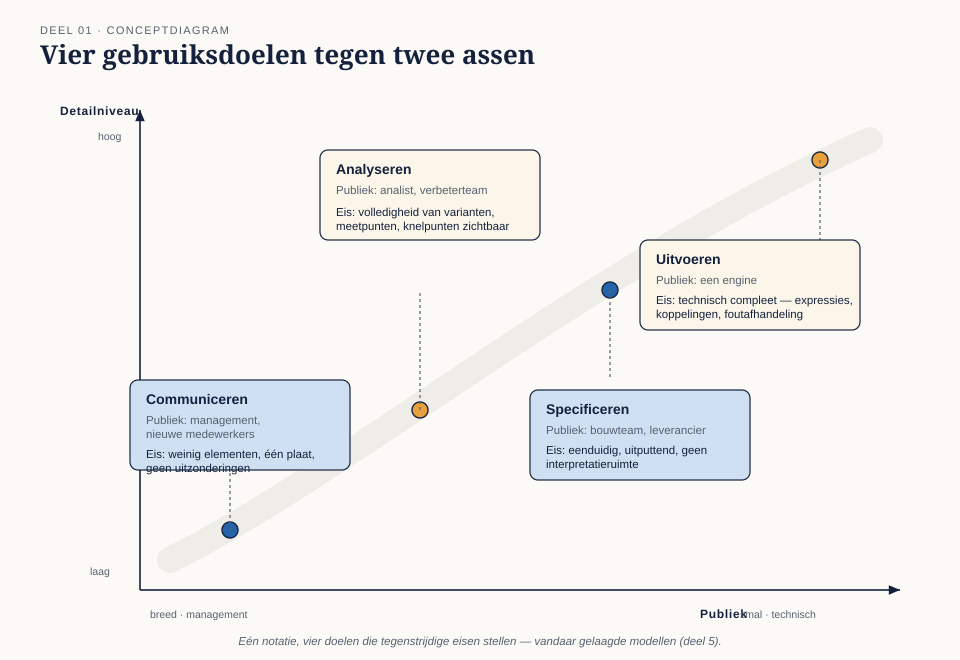

Deel 1 — Procesdenken en drie standaarden
Reader · Ductus-cursus BPMN, CMMN & DMN · niveau 1 (fundament) · deel 1 van 30 · studielast ± 4 uur
Dit materiaal bereidt voor op het examen OCEB 2 Fundamental van de Object Management Group. Het is geen vervanging van het officiële examenmateriaal en de specificaties van OMG. Verwijzingen naar de specificaties zijn opgenomen in de leeswijzer aan het eind van deze reader.
Leerdoelen
Na dit deel kun je:
- Drie soorten werk onderscheiden — routinewerk, dossierwerk en oordeelswerk — en van een concrete werksituatie bepalen welke het is.
- Uitleggen waarom procesvolgorde, dossierstructuur en beslislogica in gescheiden modellen thuishoren.
- De plaats van BPMN, CMMN en DMN in het OMG-standaardenlandschap benoemen, inclusief de rol van BMM en BPMM.
- Vier gebruiksdoelen van een model onderscheiden en benoemen welke eisen elk doel aan het model stelt.
- Uitleggen waarom een vastgelegd begrippenkader vooraf gaat aan het eerste diagram.
1.1 Drie soorten werk
Elke organisatie doet werk dat in drie soorten uiteenvalt. Het onderscheid is niet academisch: het bepaalt welke notatie je pakt, welk systeem je bouwt, en wie er straks aan het stuur zit.
Routinewerk heeft een vaste volgorde. De stappen liggen vast, de uitkomst is voorspelbaar, en afwijkingen zijn uitzonderingen die je apart benoemt. Een adreswijziging verwerken. Een premienota versturen. Een inlogverzoek afhandelen. Je kunt het opschrijven als: eerst dit, dan dat, en als X dan Y.
Dossierwerk heeft geen vaste volgorde. Er is een dossier, er zijn dingen die kunnen gebeuren, en een vakinhoudelijk medewerker bepaalt op grond van wat er binnenkomt wat er nu moet. Een klacht over een pensioenberekening. Een echtscheiding met verevening. Een nabestaandenzaak. Twee dossiers van hetzelfde type doorlopen zelden hetzelfde pad — en dat is geen slordigheid, dat is de aard van het werk.
Oordeelswerk is geen werk in de tijd maar een conclusie uit gegevens. Heeft deze deelnemer recht op de regeling? Welk tarief geldt hier? Is deze mutatie risicovol genoeg om handmatig te controleren? Er is geen volgorde, er is invoer en uitkomst, en de regels erachter komen meestal uit wetgeving of beleid.
Deze drie zitten in de praktijk door elkaar. Een klachtdossier (dossierwerk) bevat een gestandaardiseerde ontvangstbevestiging (routinewerk) en een beoordeling of de klacht binnen de termijn valt (oordeelswerk). Precies daarom heb je drie talen nodig en niet één.
Casusfragment — Meridiaan Pensioen N.V. Meridiaan is een pensioenuitvoerder met 380.000 deelnemers en circa 1.200 medewerkers, onder toezicht van DNB. De afdeling Klantcontact verwerkt jaarlijks ruim 90.000 mutaties. Daaronder vallen e-mailadreswijzigingen (routine, hoog volume, hoge automatiseringsgraad), waardeoverdrachten (deels routine, deels dossier), en klachten over pensioenberekeningen (dossier, laag volume, hoge complexiteit). Alle drie de soorten werk zitten in één afdeling, en op dit moment in één systeem dat alles als een lineair proces behandelt.
1.2 Scheiding van zorgen
De grondgedachte achter de drie standaarden is separation of concerns: leg elk soort logica vast op de plek waar hij thuishoort, en nergens anders.
Wat er gebeurt als je dat niet doet, herken je waarschijnlijk:
- Beslislogica in gateways. Een procesmodel met vijftien opeenvolgende exclusive gateways, elk met een conditie uit het acceptatiebeleid. Wijzigt het beleid, dan moet het procesmodel open. Niemand kan zien welke regels er allemaal gelden zonder het hele diagram te lezen.
- Dossierwerk als lineair proces. Een klachtafhandeling gemodelleerd als vaste keten, waar de werkelijkheid vraagt om terugspringen, wachten, opnieuw beoordelen. Het model klopt niet met de praktijk, dus de praktijk negeert het model.
- Procesvolgorde in beslistabellen. Een tabel die niet bepaalt wat geldt maar wat er nu moet gebeuren. Dan heb je een proces in tabelvorm geschreven en de leesbaarheid weggegooid.
De scheiding levert drie concrete voordelen op. Ten eerste kun je onderdelen los wijzigen: een tariefwijziging raakt de beslistabel, niet het proces. Ten tweede kunnen verschillende mensen eigenaar zijn: de proceseigenaar van de volgorde, de vakafdeling van de regels. Ten derde wordt elk model leesbaar, omdat het maar één vraag beantwoordt.
De prijs is dat je de koppelpunten moet beheren. Een proces dat een beslissing aanroept, moet weten welke beslissing, met welke invoer, en wat het terugkrijgt. Dat is deel 8 van deze cursus.
1.3 Het standaardenlandschap
Alle drie de notaties zijn standaarden van de Object Management Group (OMG), hetzelfde consortium dat UML en SysML beheert. Dat is geen bijzaak: het betekent dat de talen een gemeenschappelijke metamodelbenadering delen, dat modellen uitwisselbaar zijn tussen tools via gestandaardiseerde XML, en dat er een certificeringsprogramma aan hangt dat de standaard toetst en niet een product.
| Standaard | Waarvoor | Kernbegrip |
|---|---|---|
| BPMN 2.0.2 — Business Process Model and Notation | Processen met een volgorde | Sequence flow, token |
| CMMN 1.1 — Case Management Model and Notation | Dossiers zonder vaste volgorde | Case file, sentry |
| DMN — Decision Model and Notation | Beslissingen en beslislogica | Decision, beslistabel |
| BMM 1.3 — Business Motivation Model | Waarom de organisatie doet wat ze doet | Ends & means |
| BPMM 1.0 — Business Process Maturity Model | Hoe volwassen de procesbeheersing is | Volwassenheidsniveau |
BMM en BPMM zijn geen tekentalen maar denkkaders. Ze staan hier omdat ze deel uitmaken van het OCEB 2 Fundamental-examen: BMM verbindt processen aan doelstellingen, BPMM zegt iets over het vermogen van een organisatie om processen te beheersen. Ze komen terug in deel 2.
Een verschil in volwassenheid dat je moet kennen. BPMN wordt breed ondersteund en is de facto de standaard voor procesmodellering. DMN heeft zich in tien jaar een vaste plek verworven, vooral omdat beslistabellen direct uitvoerbaar zijn. CMMN is de minst geadopteerde van de drie: er zijn maar weinig platformen die het volledig uitvoeren, en enkele leveranciers zijn er actief van weggelopen. Dat maakt CMMN niet minder waardevol — de denkwijze erachter is onmisbaar voor dossierwerk — maar het betekent wel dat je bij een toolkeuze expliciet moet toetsen of CMMN echt ondersteund wordt, en niet alleen op de doosjeslijst staat.
Conformance subclasses. BPMN is groot. Om die reden kent de specificatie deelverzamelingen: de descriptive subclass met de elementen die je in vrijwel elk businessmodel tegenkomt, en de analytic subclass die daar de rijkere eventtypen en gatewayvarianten aan toevoegt. Deel 3 behandelt de eerste, deel 4 de tweede. Voor het examen zijn beide in scope; voor de dagelijkse praktijk kom je met de descriptive subclass verrassend ver.
1.4 Wat een model is — en waarvoor
Dezelfde notatie dient vier doelen, en die doelen stellen tegenstrijdige eisen. Wie dat niet expliciet maakt, krijgt eindeloze discussies waarin twee mensen gelijk hebben.
| Doel | Publiek | Eis aan het model |
|---|---|---|
| Communiceren | Management, nieuwe medewerkers | Weinig elementen, één plaat, geen uitzonderingen |
| Analyseren | Analist, verbeterteam | Volledigheid van varianten, meetpunten, knelpunten zichtbaar |
| Specificeren | Bouwteam, leverancier | Eenduidig, uitputtend, geen interpretatieruimte |
| Uitvoeren | Een engine | Technisch compleet: expressies, koppelingen, foutafhandeling |
Een model dat voor de directie leesbaar is, is nooit uitvoerbaar. Een uitvoerbaar model laat de directie afhaken bij slide twee. De oplossing is niet één model dat het allemaal probeert, maar meerdere niveaus die aantoonbaar bij elkaar horen: een landschapsplaat, daaronder procesmodellen, daaronder uitvoeringsdetail. Dat gelaagde model is de kern van deel 5.
Wat een model in geen van de vier gevallen is: een weergave van de werkelijkheid. Het is altijd een vereenvoudiging met een doel. De juiste vraag bij elk model is niet "klopt dit?" maar "klopt dit voor wat we ermee willen?".
1.5 Het begrippenkader
Voor je één diagram tekent, leg je vast wat de woorden betekenen. Dit lijkt bureaucratie en is het niet.
Bij Meridiaan bestaan vier verschillende definities van "actieve deelnemer" naast elkaar, elk in een ander systeem, elk met een eigen aantal. Elk procesmodel dat het woord gebruikt zonder te zeggen welke definitie, is dubbelzinnig — en dus onbruikbaar als specificatie.
Twee lagen in het begrippenkader:
Domeinbegrippen — deelnemer, polis, aanspraak, mutatie, waardeoverdracht. Deze horen bij het informatiemodel van de organisatie en niet bij het procesmodel; het procesmodel gebruikt ze alleen. Als er een begrippenkader of gegevenswoordenboek bestaat, sluit je daarop aan in plaats van een eigen versie te maken.
Modelleerbegrippen — taak, activiteit, gebeurtenis, poort, dossier, mijlpaal, beslissing. Hier speelt een tweede probleem: de standaarden zijn Engelstalig, de organisatie spreekt Nederlands. "Task", "activity" en "activiteit" worden in gesprekken door elkaar gebruikt terwijl ze in de specificatie een precieze relatie hebben (elke task is een activity, niet omgekeerd).
De praktische regel die dit programma hanteert: modelleerbegrippen houden we Engels, precies zoals de specificatie ze noemt, omdat vertalen betekenisverlies geeft en het examen Engelstalig is. Domeinbegrippen zijn Nederlands, zoals de organisatie ze gebruikt. Een label als "Aanvraag beoordelen" in een task is dus normaal; het element zelf noem je een task en geen "taak".
1.6 Hoe je de rest van dit niveau doorloopt
De volgorde is niet willekeurig. Deel 2 zet het managementkader neer (BPM-levenscyclus, BMM, volwassenheid) omdat de examenstof daar begint en omdat modelleren zonder doel geen betekenis heeft. Deel 3 tot en met 5 leren je BPMN — eerst de kern, dan de rijkere elementen, dan stijl. Deel 6 is DMN, deel 7 CMMN. Deel 8 zet de drie tegen elkaar af en oefent de keuze. Deel 9 gaat over tooling en uitwisseling, deel 10 is examentraining en capstone.
Vanaf deel 3 werk je in de modelleeromgeving van Conductus. Modellen die je daar maakt, kun je in latere delen daadwerkelijk uitvoeren — vanaf niveau 2 is dat een expliciet leerdoel.
Kernbegrippen
Routinewerk — werk met een vaste, voorspelbare volgorde · Dossierwerk — werk waarvan de volgorde per geval verschilt en door een behandelaar wordt bepaald · Oordeelswerk — het afleiden van een conclusie uit gegevens · Separation of concerns — het scheiden van soorten logica over aparte modellen · Conformance subclass — een gestandaardiseerde deelverzameling van BPMN-elementen · Descriptive subclass — de kernset BPMN-elementen voor businessmodellen · Analytic subclass — de descriptive subclass plus rijkere events en gateways · BMM — Business Motivation Model · BPMM — Business Process Maturity Model
Examenrelevantie — OCEB 2 Fundamental
Dit deel raakt drie examenonderdelen: Business Process Concepts and Fundamentals (het onderscheid tussen soorten werk en het definiëren van een bedrijfsproces), Business Process Modeling Concepts (de plaats van BPMN, de conformance subclasses) en de introductie van Business Motivation Modeling. Verwacht op het examen vragen die vragen om een korte situatiebeschrijving te classificeren.
Leeswijzer bij de specificaties
- BPMN 2.0.2 — hoofdstuk 1 (Scope), 2.2.1 (Process Types), tabel 2.1 en 2.2 (conformance subclasses), hoofdstuk 7 (Overview)
- CMMN 1.1 — hoofdstuk 1 (Scope), 5.1 (Overview)
- DMN — hoofdstuk 1 (Scope) en de inleiding op het decision requirements level
- BMM 1.3 — hoofdstuk 1 en 7
- BPMM 1.0 — hoofdstuk 1 en 2.1
De specificaties zijn kosteloos beschikbaar via omg.org. Controleer bij aanvang van de cursus welke versienummers actueel zijn; de hoofdstukindeling wijzigt zelden, de versienummers wel.
Figurenlijst


